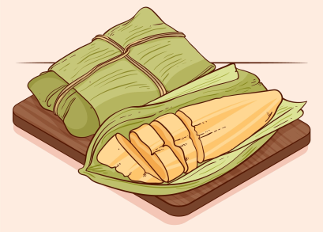

Pamonha
Prato típico com minho verde ralado
Porções
01
Ingredientes
1 espiga de milho verde
1 colher de sopa de açúcar
1 colher de sopa de manteiga
Sal a gosto
Palha de milho (para embrulhar)
Modo de Preparo
Descasque a espiga de milho e corte os grãos.
Bata o milho, açúcar, manteiga e sal no liquidificador.
Coloque a massa nas palhas de milho e feche bem.
Cozinhe em água fervente por cerca de 40 minutos.
Deixe esfriar e sirva.